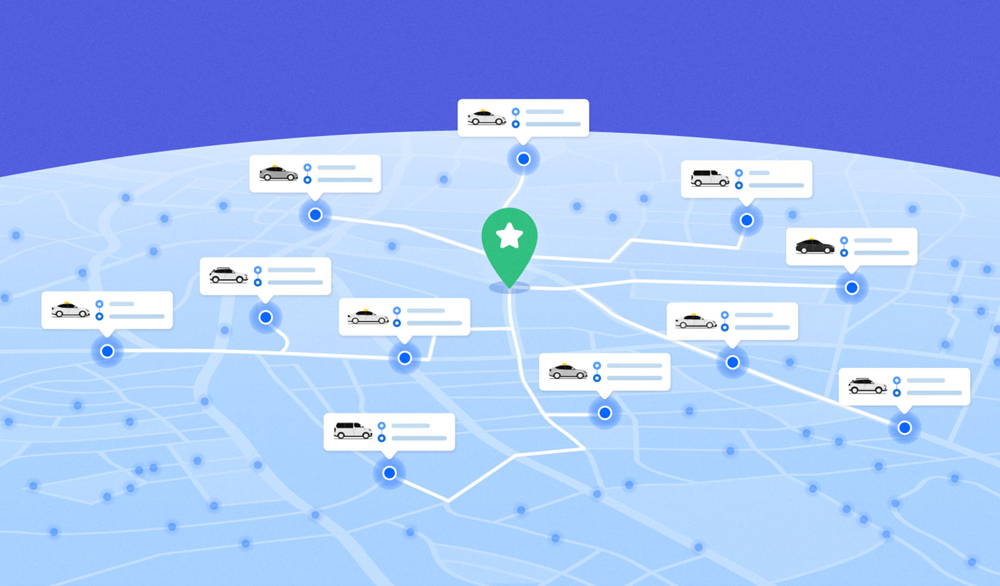
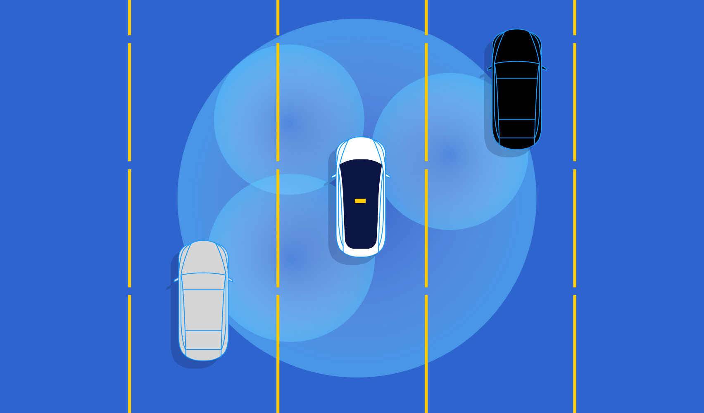
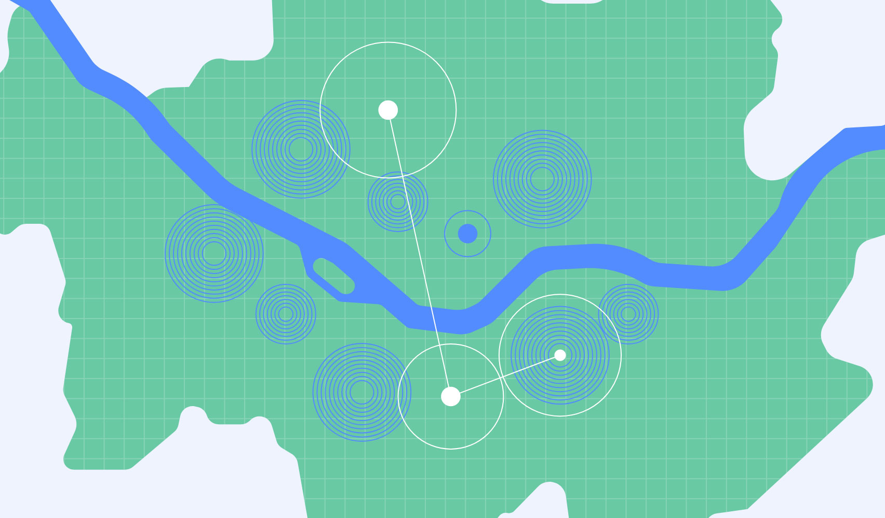
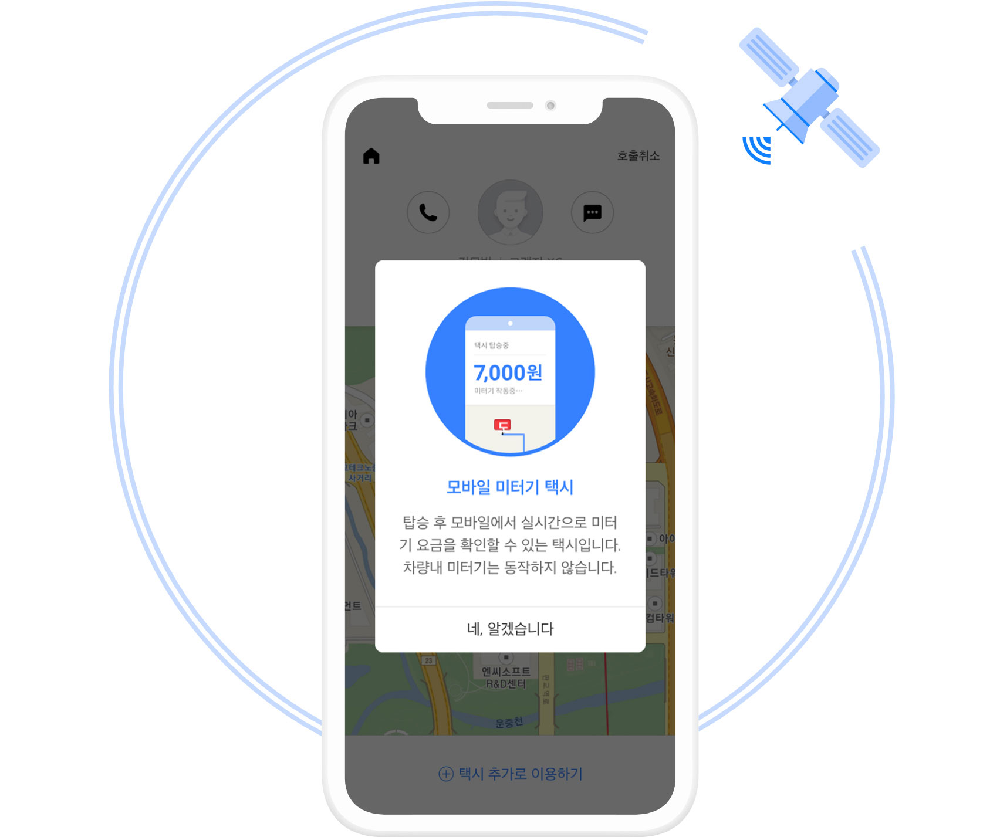

메인동영상
Kakao Mobility technology story
생활을 변화시키는
카카오모빌리티의 기술 이야기
사람들이 더 많은 것을 보고 느끼고 발견할 수 있도록
생활을 변화시키는 이동 기술과 경험을 선보입니다.
01
스마트 & 오토노머스
모빌리티 시대의 준비
풍부한 모빌리티 데이터를 기반으로 AI 엔진 제작을 통해
새로운 모빌리티 시대를 열어갑니다.
-

더 빠르고 더 편안한 연결을 위한 데이터 기반 택시 배차 시스템
매초 마다 실시간으로 쏟아지는 택시 호출 요청.
자세히보기
어떻게 하면 도로 위를 달리고 있는 수많은 기사님들 중
가장 적절한 기사님을 찾아 빠르게 연결할 수 있을까요?
카카오 T 택시는 배차 시스템에 다양한 데이터 분석 모델과
예측 기술을 도입하며 배차 기술 혁신을 위한 도전을 이어가고 있습니다.
택시 호출. 배차, 탑승, 하차, 평가에 이르는
모든 과정에서 승객과 기사 모두가 만족할 수 있을 때까지.
더 나은 택시 서비스를 만들기 위한 카카오모빌리티의 노력은 계속됩니다. -

이동에 제약없는 세상을 만들기 위해 자율주행 모빌리티 연구
운전에 대한 고민없이, 방법에 대한 걱정없이
자세히보기
자유롭게 이동할 수 있다면 더 많은 것을 할 수 있지 않을까?
모두가 원할 때 언제 어디서나 쉽게 이동할 수 있도록,
카카오모빌리티의 기술력과 카카오 T 플랫폼이 만나
실생활에 빠르게 접목될 자율주행 서비스를 준비합니다. -

더 빠르고 스마트한 귀가를 위한 대리운전 수요 예측 시스템
사람이 몰리는 장소를 미리 알 수 있다면
자세히보기
기사는 배회할 필요 없이, 고객은 호출 실패 걱정 없이
대리운전을 이용할 수 있지 않을까?
카카오 T 대리는 자체 수요 예측 시스템으로
데이터 분석을 통해 호출이 많아질 곳을 미리 알아서
준비하고, 기사 배정이 잘되는 최적의 요금을 추천해드려요.
이제 대리운전도 데이터로 더 스마트하게,
카카오 T 대리로 이용해보세요. -

목적지에 도착했는데 주차장이 만차라서
자세히보기
들어가지 못하고 마냥 기다려본 적 있나요?
주차장 입출차 데이터를 활용한 AI 엔진으로 사용자의
도착 예상시간에 따른 주차장 현황을 예측하고
만차가 예상될 경우에는 대안 주차장을 알려드려요.
이동의 시작부터 끝까지 모두가 편리할 수 있도록
카카오모빌리티는 계속 연구합니다.
02
정교한 위치 추정 기술이 만드는
이동의 자유
카카오모빌리티만의 위치 측정 기술을 바탕으로 더 나은 이동을 위한
새로운 기술을 만들어갑니다.
-
실내에서도 완벽한 길안내를 위해 세계 최초 FIN 기술 개발
터널 안 GPS 잡히지 않는 내비게이션에 당황하신 적 있나요?
자세히보기
답답했던 운전경험은 이제 FIN이 해결해 줄 거에요.
FIN 기술은 LTE 신호 데이터를 학습해서
사용자의 현재 위치를 더 정확하고 빠르게 알아냅니다.
*FIN(Fused Indoor Localization)=융합 실내 측위
터널 뿐만 아니라 건물 안에서도 이용할 수 있어서
활용 가능성이 무궁무진한 카카오모빌리티의
FIN 기술, 지금 카카오내비에서 만나보세요. -

더 나은 택시 서비스를 만들기 위해 중형택시 최초 앱미터기 시범운영
기사님이 차량 미터기에 요금을 입력하는 모습을 보며
자세히보기
혹시나 계산이 잘못되지 않았을까 걱정한 적 있나요?
이제 카카오 T 앱에서 실시간으로 요금을 확인할 수 있어요.
GPS 기반으로 시간과 거리, 속도를 계산하여 요금이 산정되어
복잡하게 계산할 필요 없이 이용이 가능합니다.
기사와 승객 모두에게 편리한 앱미터기 서비스를
카카오 T 택시를 통해 경험해보세요.
더 나은 이동을 위한
카카오모빌리티의 노력
2017 카카오모빌리티 리포트
매년 대한민국의 모든 이동을 탐구하고 그 결과를 담은 리포트를 발간합니다.
축적된 데이터를 다양한 시각으로 분석하여 의미있는 정보를 전달하고,
이를 통해 더 편리하고 안전한 사회를 만들어나가길 소망합니다.
2018 카카오모빌리티 리포트
매년 대한민국의 모든 이동을 탐구하고 그 결과를 담은 리포트를 발간합니다.
축적된 데이터를 다양한 시각으로 분석하여 의미있는 정보를 전달하고,
이를 통해 더 편리하고 안전한 사회를 만들어나가길 소망합니다.
2019 카카오모빌리티 리포트
매년 대한민국의 모든 이동을 탐구하고 그 결과를 담은 리포트를 발간합니다.
축적된 데이터를 다양한 시각으로 분석하여 의미있는 정보를 전달하고,
이를 통해 더 편리하고 안전한 사회를 만들어나가길 소망합니다.
2020 카카오모빌리티 리포트
매년 대한민국의 모든 이동을 탐구하고 그 결과를 담은 리포트를 발간합니다.
축적된 데이터를 다양한 시각으로 분석하여 의미있는 정보를 전달하고,
이를 통해 더 편리하고 안전한 사회를 만들어나가길 소망합니다.